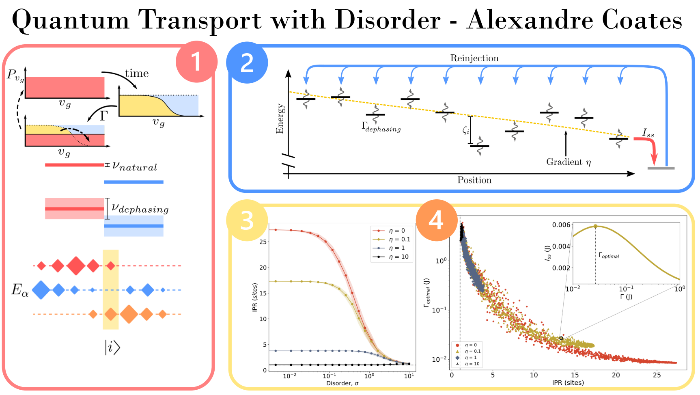

## Weekly Update ----- ### Last Week 1. Made flash talk for CDT skills event next week <!-- .element: class="fragment" --> 2. Clarifying project with Erik and Brendon <!-- .element: class="fragment" --> 3. Chat with Nick and Scott on dipoles <!-- .element: class="fragment" --> 4. Started coding up dipoles <!-- .element: class="fragment" --> 5. Initial debugging <!-- .element: class="fragment" --> 6. Invited Gerald for Theory Coffee on TEMPO work <!-- .element: class="fragment" --> ----- ### Main Results <section> <video controls=True loop=True class="r-stretch" src="img/dipoleNetwork.mp4"></video> <p>$$ J_{a,b}(\vec{r}_{a,b}) = \frac{1}{4\pi\epsilon_0} \frac{\vec{d}_a \cdot \vec{d}_b}{|\vec{r}|^3} - 3\frac{(\vec{r}\cdot \vec{d}_a)(\vec{r} \cdot \vec{d}_b)}{|\vec{r}|^5} $$ </p></section> --- ## Flash Talk <section>  </section> ----- ### This Week 1. Still need to go over paper comments 2. Continue coding, aim to finish initial work Friday * applying prior steady state code * pandas and HDF5 for storing/recalling data 3. Invite potential Theory Coffee speakers * Surrey QBIO DTC people * Some people from Paternostro's QTEQ group 4. Collate momentum rejuvenation notes